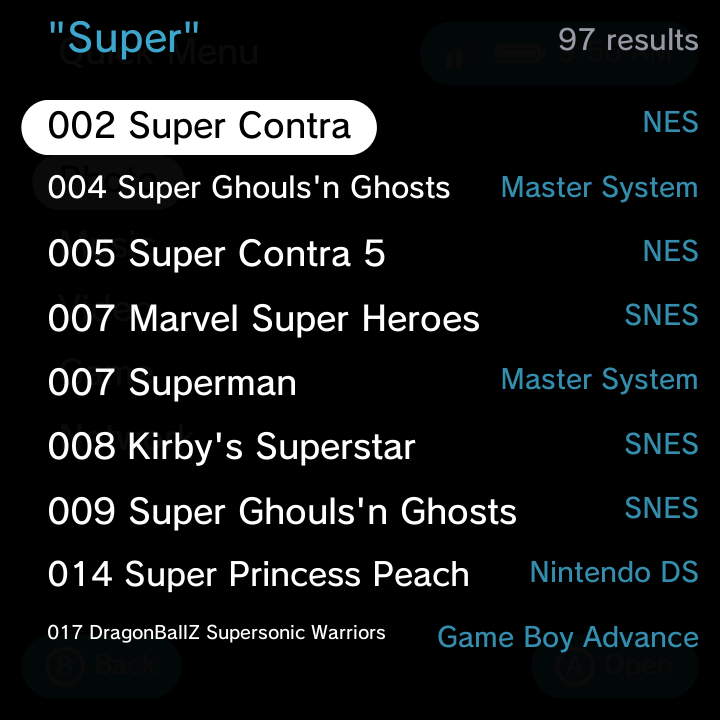

Got a big library? You do not have to scroll. Global Search finds anything on your handheld in a couple of keystrokes.

Open Search
Press Select anywhere on the home to open global Search. It works from any category and in any theme.
Search everything at once
Search looks across all of your content at the same time:
- Games
- Music
- Photos
- Videos
Start typing and the results filter live as you go, so you see matches after just the first few letters. Keep typing to narrow things down, then move the highlight to the result you want and press A to open or launch it.
You do not need to pick a category first. One search covers your whole library, so this is the quickest way to jump straight to that one game or song you had in mind.
Close Search
Press Select again (or B) to close Search and return to where you were.
Related
New to moving around the menus? See Getting Around for the full navigation basics.